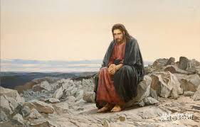

Христос в пустыне
Крамской рассказывал в письме критику Всеволоду Гаршину,как появилось произведение: «Я вижу ясно,что есть один момент в жизни каждого человека,мало-мальски созданного по образу и подобию Божию,когда на него находит раздумье-пойти ли направо или налево?Мы все знаем,чем обыкновенно кончается подобное колебание.»
Тема Христа не оставляла художника.После Крамской взялся за новую картину на библейский сюжет «Хохот».